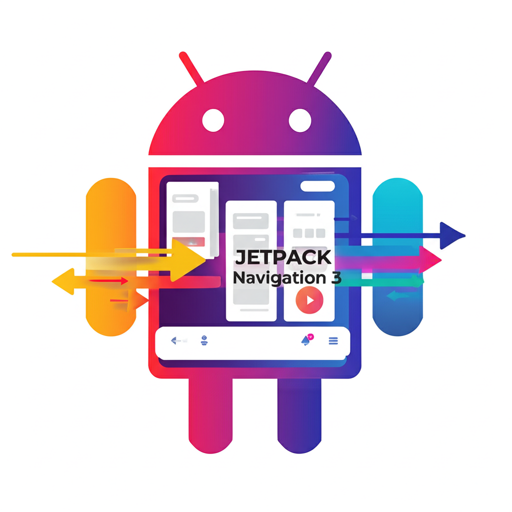
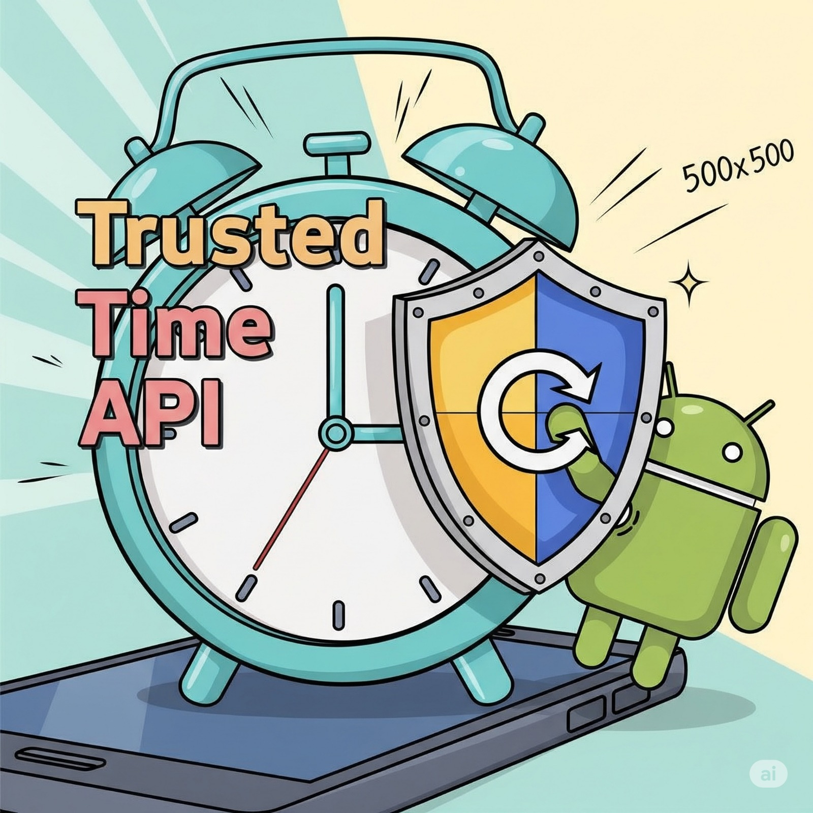

Mert Yiğit
Android geliştiricisiyim, yaratıcı mobil uygulamalar yapıyorum.
Yeni fırsatlara ve tekliflere açığım.


Kullandığım Teknolojiler
Blog Yazılarım

Jetpack Navigation 3 ile Android'de Modern Navigasyon Yönetimi
Android Studio'da API Testi Artık Daha Kolay: HTTP Client Plugin
